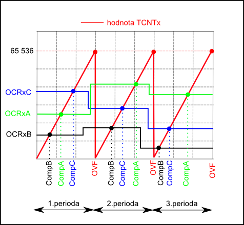

Čítače / Timery
Seznámení s ovládání timerů, jejich
nastavování a využití přerušení od
timeru. Nutné pro jakoukoliv práci s periodicky se
opakující
událostí.
Řešené příklady:
• Vytvořte periodicky opakující signál o zadané frekvenci
• Vizualizujte danou úlohu
Zadání :
Pomocí přerušení timeru (CompA,B,C) postupně rozsvěcujte LED 1-3 (cca
1s) . Při přetečení timeru (OVF) všechny 3 LED zhasněte. Pro
názornost také blikejte LED 8 (100ms) - řešeno přes delay v hlavni
smyčce.
Nápověda :
Funkce timeru
Timer (čítač) je speciální registr v paměti mikrokontroléru, který mění
svou hodnotu v pevně stanovených periodách, nebo (dle nastaveni) dle
přivedeného signálu na piny mikrokontroléru.
Timer je důležitou součástí pro různé aplikace jako jsou například :
- Čítač impulsů - hodnota timeru se mění dle počtu impulsů přivedených na piny timeru
- Měření času - při měření se spustí timer a dle počtu přesně daných period (taktů) lze určit výsledný čas
- Generování PWM signálu - jedna se o přesně definovaný časový průběh
- Opakovat akce v přesných časových úsecích
- díky přerušení od čítače lze v jednom
cyklu vyvolat až čtyři nezávislé přerušení
viz obr.

Na obrázku je znázorněn průběh při využití všech přerušení. Hodnoty
registru OCRxA až OCRxC lze kdykoli skokově měnit. v Případě kdy
hodnota timeru je rovna hodnotě registru OCRxx, vyvolá se příslušné
přerušení. Při naplnění timeru se vyvolá přerušení OVF (overflow -
přetečení) a dojde k vynulování hodnoty timeru. Tento režim se nazývá
normální (Normal top) . Existuje ještě režim CTC (Clear To Compare -
vynulovat při shodě), kdy timer nepočítá do "plna", ale do hodnoty
pomocného registru např ICRx - který lze libovolně měnit. Tímto
způsobem je možné přesně nastavit i periodu (cyklus) timeru.
Inicializace Timeru 1 :
// Timer/Counter 1 initialization
// Clock source: System Clock
// Clock value: 15,625 kHz
// Mode: Normal top=FFFFh
// OC1A output: Discon.
// OC1B output: Discon.
// OC1C output: Discon.
// Noise Canceler: Off
// Input Capture on Falling Edge
// Timer 1 Overflow Interrupt: On
// Input Capture Interrupt: Off
// Compare A Match Interrupt: On
// Compare B Match Interrupt: On
// Compare C Match Interrupt: On
TCCR1A=0x00;
TCCR1B=0x05;
TCNT1H=0x00;
TCNT1L=0x00;
ICR1H=0x00;
ICR1L=0x00;
OCR1AH=0x00;
OCR1AL=0x00;
OCR1BH=0x00;
OCR1BL=0x00;
OCR1CH=0x00;
OCR1CL=0x00;
// Timer(s)/Counter(s) Interrupt(s) initialization
TIMSK=0x1C;
ETIMSK=0x01;
Vektory přerušení timeru :
ISR(TIMER1_COMPA_vect)
{
}
ISR(TIMER1_COMPB_vect)
{
}
ISR(TIMER1_COMPC_vect)
{
}
ISR(TIMER1_OVF_vect)
{
}
Řešení :
#define F_CPU 16000000UL
#include <avr/io.h>
#include <string.h>
#include <util/delay.h>
#include <avr/interrupt.h>
//*******************************************************************************************
// MOJE UPRAVY
//-------------------------------------------------------------------------------------------
//
#define setb(port,pin) port |= 1<<pin //nastav bit
#define clrb(port,pin) port &= ~(1<<pin) //nuluj bit
#define negb(port,pin) port ^= 1<<pin //neguj bit
//***********************************************************************************
volatile unsigned char compA=0;
volatile unsigned char compB=0;
volatile unsigned char compC=0;
volatile unsigned char plno=0;
ISR(TIMER1_COMPA_vect)
{
compA=1;
}
ISR(TIMER1_COMPB_vect)
{
compB=1;
}
ISR(TIMER1_COMPC_vect)
{
compC=1;
}
ISR(TIMER1_OVF_vect)
{
plno=1;
}
void main(void)
{
// Timer/Counter 1 initialization
// Clock source: System Clock
// Clock value: 15,625 kHz
// Mode: Normal top=FFFFh
// OC1A output: Discon.
// OC1B output: Discon.
// OC1C output: Discon.
// Noise Canceler: Off
// Input Capture on Falling Edge
// Timer 1 Overflow Interrupt: On
// Input Capture Interrupt: Off
// Compare A Match Interrupt: On
// Compare B Match Interrupt: On
// Compare C Match Interrupt: On
TCCR1A=0x00;
TCCR1B=0x05;
TCNT1H=0x00;
TCNT1L=0x00;
ICR1H=0x00;
ICR1L=0x00;
OCR1AH=0x00;
OCR1AL=0x00;
OCR1BH=0x00;
OCR1BL=0x00;
OCR1CH=0x00;
OCR1CL=0x00;
// Timer(s)/Counter(s) Interrupt(s) initialization
TIMSK=0x1C;
ETIMSK=0x01;
DDRB=0xFF; // vystupní - Ledky
DDRD=0x00; // vstupní - Tlacitka
// Global enable interrupts
sei();
// zablikani na zacatku
PORTB=0;
_delay_ms(500);
PORTB=255;
_delay_ms(500);
PORTB=0;
_delay_ms(100);
PORTB=255;
_delay_ms(100);
PORTB=255;
while (1)
{
OCR1C=16000;
OCR1B=32000;
OCR1A=48000;
negb(PORTB,7);
_delay_ms(100);
if (compA==1)
{
negb(PORTB,0);
compA=0;
}
if (compB==1)
{
negb(PORTB,1);
compB=0;
}
if (compC==1)
{
negb(PORTB,2);
compC=0;
}
if (plno==1)
{
PORTB=255;
plno=0;
}
};
}